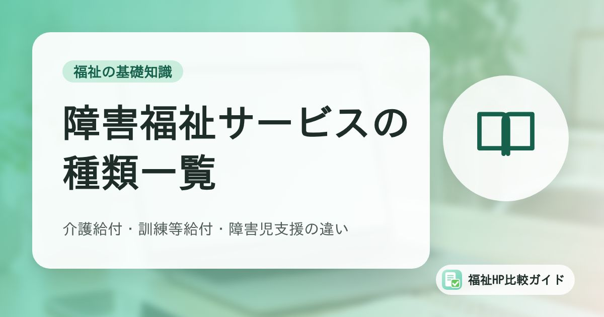

障害福祉サービスの種類一覧｜介護給付・訓練等給付・障害児支援の違いをわかりやすく解説

障害福祉サービスは種類が多く、名前も似ているため「自分の事業所はどの制度の、どの位置づけなのか」を説明しにくいと感じる方も多いはずです。この記事では、サービスの全体像を一覧で整理し、ホームページで事業内容を伝えるときのポイントもあわせて紹介します。
この記事でわかること
- 障害福祉サービスの全体像（介護給付・訓練等給付・相談支援・地域生活支援事業・障害児支援）
- 主なサービスの対象者と内容の違い
- 2024年度・2025年度に始まった新しい仕組み（就労選択支援など）
- ホームページで「どんな事業所か」を正しく伝えるコツ
障害福祉サービスの全体像
障害のある方への福祉サービスは、主に次の2つの法律にもとづいて提供されています。
- 障害者総合支援法：主に18歳以上の方（一部は児童も対象）への介護・訓練・相談支援など
- 児童福祉法：障害のある児童への通所支援・入所支援・相談支援
障害者総合支援法のサービスは、国が費用を負担する「自立支援給付」と、市町村や都道府県が地域の実情に応じて行う「地域生活支援事業」に大きく分かれます。自立支援給付の中心が、介護を受けるための「介護給付」と、自立や就労に向けた訓練を受けるための「訓練等給付」です。
| 区分 | 主なサービス | 根拠法 |
|---|---|---|
| 介護給付 | 居宅介護、重度訪問介護、同行援護、行動援護、重度障害者等包括支援、短期入所、療養介護、生活介護、施設入所支援 | 障害者総合支援法 |
| 訓練等給付 | 自立訓練（機能訓練・生活訓練）、就労選択支援、就労移行支援、就労継続支援（A型・B型）、就労定着支援、自立生活援助、共同生活援助（グループホーム） | 障害者総合支援法 |
| 相談支援 | 計画相談支援、地域移行支援、地域定着支援 | 障害者総合支援法 |
| 地域生活支援事業 | 移動支援、日中一時支援、地域活動支援センター、相談支援事業など（市町村等が実施） | 障害者総合支援法 |
| 障害児通所支援 | 児童発達支援、放課後等デイサービス、居宅訪問型児童発達支援、保育所等訪問支援 | 児童福祉法 |
| 障害児入所支援 | 福祉型障害児入所施設、医療型障害児入所施設 | 児童福祉法 |
| 障害児相談支援 | 障害児支援利用計画の作成など | 児童福祉法 |
「障害福祉サービス」という言葉の範囲
法律上の「障害福祉サービス」は介護給付と訓練等給付のサービスを指しますが、一般的には相談支援や障害児支援まで含めて「障害福祉サービス」と呼ぶことが多くあります。この記事でも広い意味で使っています。
介護給付：日常生活の介護を受けるサービス
介護給付は、日常生活に介護が必要な方を対象としたサービスです。多くのサービスで、市町村による「障害支援区分」の認定が必要になります。
訪問系サービス
- 居宅介護（ホームヘルプ）：自宅での入浴・排せつ・食事などの介護、家事援助
- 重度訪問介護：重度の肢体不自由や行動障害のある方への、長時間にわたる総合的な介護と外出支援
- 同行援護：視覚障害により移動が難しい方への外出時の同行・情報提供
- 行動援護：知的障害・精神障害により行動上著しい困難がある方への、危険回避などの支援
日中活動・入所系サービス
- 生活介護：主に日中、施設で入浴・排せつ・食事の介護や、創作的活動・生産活動の機会を提供
- 療養介護：医療と常時介護が必要な方への、病院での機能訓練・療養上の管理・看護・介護
- 短期入所（ショートステイ）：介護者の病気などの際に、短期間施設で介護を行う
- 施設入所支援：施設に入所する方への、夜間や休日の介護
訓練等給付：自立・就労に向けた訓練を受けるサービス
訓練等給付は、自立した生活や就労に向けた訓練・支援を行うサービスです。原則として障害支援区分の認定は不要です（共同生活援助で介護を受ける場合などを除く）。
| サービス | 内容 | ポイント |
|---|---|---|
| 自立訓練（機能訓練） | 身体機能の維持・向上のための訓練 | 標準利用期間は原則1年6か月 |
| 自立訓練（生活訓練） | 生活能力の維持・向上のための訓練 | 標準利用期間は原則2年 |
| 就労選択支援 | 本人と一緒に就労に関する適性や希望を整理し、働き方の選択を支援 | 2025年10月開始の新サービス |
| 就労移行支援 | 一般企業への就職を目指す方への訓練・求職活動の支援 | 標準利用期間は原則2年 |
| 就労継続支援A型 | 雇用契約を結んで働く場の提供 | 最低賃金以上の給与 |
| 就労継続支援B型 | 雇用契約を結ばずに、自分のペースで働く場の提供 | 生産活動の対価として工賃を支払う |
| 就労定着支援 | 一般就労した方の職場定着の支援 | 利用期間は最長3年 |
| 自立生活援助 | 一人暮らしを始めた方への定期訪問・相談 | 標準利用期間は原則1年 |
| 共同生活援助 | グループホームでの共同生活の支援 | 複数の類型がある |
就労系サービスの違いは「就労継続支援A型とB型の違い」、グループホームについては「障害者グループホームの種類と違い」で詳しく解説しています。
就労選択支援が始まっています
就労選択支援は、障害のある方が自分に合った働き方を選べるよう、作業場面でのアセスメントなどを通じて適性や希望を整理するサービスです。2025年10月から、新たに就労継続支援B型を利用する方は原則としてこの就労選択支援を利用することになりました。就労継続支援A型・就労移行支援についても、2027年4月から原則利用とする予定が示されています。詳細な対象者や例外は、市町村の案内を確認してください。
相談支援：サービス利用の計画づくりを支える
障害福祉サービスを利用するときは、相談支援専門員が本人の希望や状況を聞き取り、「サービス等利用計画」を作成します（計画相談支援）。また、施設や病院から地域生活へ移るための支援（地域移行支援）、一人暮らしの方の緊急時対応（地域定着支援）もあります。
相談支援専門員は、利用者に事業所を紹介する立場でもあります。事業所を選ぶとき、相談支援専門員がホームページで「対象者」「定員」「空き状況」「送迎範囲」などを確認するケースは少なくありません。事業所のホームページは、利用者本人や家族だけでなく、専門職にも読まれていることを意識しておきましょう。
障害児支援：児童福祉法にもとづくサービス
障害のある児童へのサービスは、児童福祉法にもとづいて提供されます。代表的なのが通所型の「児童発達支援」と「放課後等デイサービス」です。
- 児童発達支援：主に未就学の児童に、日常生活の基本的な動作や集団生活への適応などの支援を行う
- 放課後等デイサービス：就学している児童に、放課後や休日に生活能力向上のための支援や居場所を提供する
- 居宅訪問型児童発達支援：重度の障害などで外出が難しい児童の自宅を訪問して支援
- 保育所等訪問支援：保育所や学校などを訪問し、集団生活への適応を支援
なお、2024年4月からは、それまで「福祉型」と「医療型」に分かれていた児童発達支援が一元化されました。児童発達支援と放課後等デイサービスの違いは「放課後等デイサービスと児童発達支援の違い」で解説しています。
ホームページで事業内容を正しく伝えるコツ
サービスの種類が多いからこそ、事業所のホームページでは「どの制度にもとづく、どんなサービスなのか」を正確に、かつわかりやすく伝えることが大切です。
- 正式なサービス名を明記する：「就労継続支援B型」「共同生活援助（日中サービス支援型）」など、指定を受けている正式名称を記載する
- 平易な言葉で言い換える：「自分のペースで働きながら工賃を得られる場所です」のように、初めての方にも伝わる説明を添える
- 対象者・定員・利用料の考え方を書く：「どんな人が使えるのか」「費用はどのくらいか」は最も多い疑問です
- 1日の流れや写真を載せる：実際の雰囲気が伝わると、見学や問い合わせにつながりやすくなります
- 事業所番号や運営法人を記載する：行政や相談支援専門員が確認しやすくなり、信頼性も高まります
ホームページに載せたい項目は「福祉事業所のホームページに載せるべき項目チェックリスト」にまとめています。
まとめ
障害福祉サービスは、障害者総合支援法の「介護給付」「訓練等給付」「相談支援」「地域生活支援事業」と、児童福祉法の「障害児支援」に大きく整理できます。2025年10月には就労選択支援が始まるなど、制度は少しずつ変化しています。
事業所のホームページでは、正式なサービス名と平易な説明を組み合わせ、利用者・家族・相談支援専門員のそれぞれが知りたい情報を載せることが、信頼と問い合わせにつながります。
よくある質問
障害福祉サービスを利用するには何が必要ですか？
原則として、お住まいの市町村に申請して「障害福祉サービス受給者証」の交付を受ける必要があります。介護給付では障害支援区分の認定も行われます。申請前には相談支援事業所でサービス等利用計画（案）を作成するのが一般的です。
障害者手帳がないと利用できませんか？
障害者手帳がなくても、医師の診断書などで障害があると認められれば利用できるサービスがあります。対象となるかどうかは市町村の判断になるため、障害福祉担当窓口で確認してください。
事業所のホームページには、どのサービス名を書けばよいですか？
指定を受けているサービスの正式名称（例：「就労継続支援B型」「共同生活援助（介護サービス包括型）」）を必ず記載し、そのうえで「どんな方が、どのように過ごす場所なのか」を平易な言葉で補足するのがおすすめです。正式名称は検索や行政・相談支援専門員の確認にも使われます。
参考資料・出典
制度・料金・統計は改定される場合があります。最新の内容は各出典の公式情報でご確認ください。